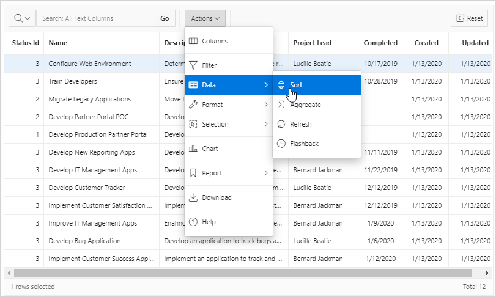
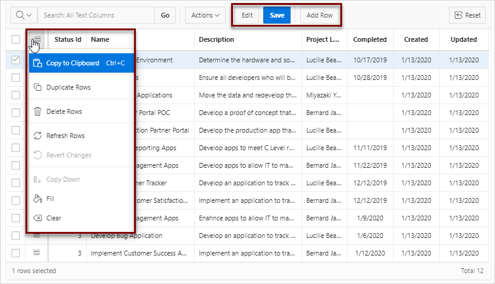

10.6.1 Example Interactive Grid
View interactive grid examples.
An interactive grid presents users a set of data in a searchable, customizable report. Functionally, an interactive grid includes most customization capabilities available in interactive reports plus the ability to rearrange the report interactively using the mouse and keyboard. Users can lock, hide, filter, freeze, highlight, sort individual columns, and create control breaks on specific columns using the Actions and Column Heading menus. Advanced users can define breaks and aggregations against columns. Users can also directly customize the appearance of an interactive grid. Users can use the mouse and keyboard to resize the width of a column and drag and drop columns into different places in the grid. Once customized, the report can be saved as either a private or public report. Both the Create Application Wizard and Create Page Wizard support the creation of interactive grids.
The following is an example of an interactive grid.
Description of the illustration rpt_ig.png
Editable Interactive Grid
Developers have the option of making an interactive grid editable. In an editable interactive grid, users can also add to, modify, and refresh the data set directly on the page. Editable interactive grids include additional controls. A Row Actions menu displays at the start of each row and enables users to add, edit, and refresh rows. Edit, Save, and Add Row buttons also display to the right of the Actions menu.
The following is an example of an editable interactive grid.
Description of the illustration ig_editable.png
See Also:
-
Using Interactive Grids in Oracle Application Express End User’s Guide
Parent topic: Managing Interactive Grids